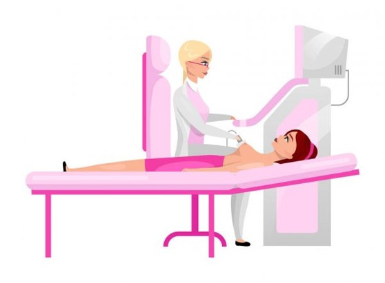
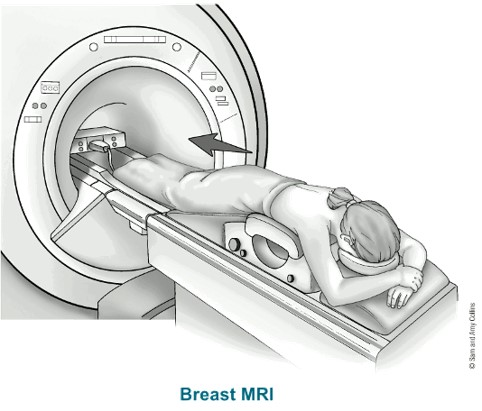

According to the World Cancer Research Fund, breast cancer is the most common type of cancer among women, and the second most common cancer overall. In 2018, there were over 2 million new cases, with the US and Canada registering 84.9 and 83.8 cases per 100,000 respectively. In the US, 1 in 8 women can expect to develop invasive breast cancer over the course of their life. The prevalence of breast cancer in today’s society makes early detection an issue of paramount importance. According to the American Cancer Society, early detection of breast cancer in localized stages have a 5-year survival rate of 99%. In comparison, the overall 5-year survival rate for all stages combined is 90%, while the survival rate for region (when it spreads to nearby structures outside the breast) is just 86%.
Several techniques currently exist, or are in development, for breast cancer detection. Mammography is still considered the gold standard in screening for breast cancer. However, the accuracy of conventional analog mammography is influenced by the age and breast density of the subject, with denser breasts having sensitivities as low as 30-48%. In addition to dense breasts, other factors including young age, estrogen-replacement therapy, and a familial history of breast cancer can lead to an increase in false positives. A newer technique, known as full-field digital mammography (FFDM), utilizes digital detectors in place of the analog film used in conventional mammography. A multicenter FFDM trial showed sensitivity of 70% compared to 55% for conventional mammograms in women with dense breasts aged under 50 years. Computer Aided Detection (CAD) programs can also help recognize abnormal patterns in breast imaging. While certain studies have shown that using CAD can reduce false-negative rates by as much as 70%, there are concerns around CAD increasing recall and biopsy rates. Ultrasonography is another technique used to supplement routine screening of young women. It is particularly useful in localizing and allowing biopsies of lesions seen from Magnetic Resonance Imaging (MRIs) but not on mammograms. While ultrasonography is painless and requires no radiation, it relies heavily on the operator’s experience. Lastly, more recently, MRIs have been used for breast cancer imaging. However while MRIs can produce high rates of sensitivity their specificity is low, implying it is associated with higher rates of false positives. MRIs are also relatively expensive to conduct and not typically covered under insurance.
 A novel technique using elastography has been proposed by Dr. Samani et al. which uses axial and lateral displacement maps to detect breast cancer. In this technique, the breast is compressed using the ultrasound transducer while ultrasound radiofrequency (RF) data are acquired. Throughout the tissue compression stage 20 to 50 RF data frames are acquired. Ultrasound elastography techniques rely on using only two frames of ultrasound RF data that represent two states of pre- and post-compression states to calculate and generate displacement maps. Identification of the optimal two frames is currently done using inefficient ad-hoc techniques or brute force techniques whereby every single combination of frames is considered before corresponding displacement field is calculated. The proposed software solution would use deep learning and neural networks to implement an algorithm that could accurately and rapidly identify the optimal pair of frames to be used within the displacement calculation.
Back to Home